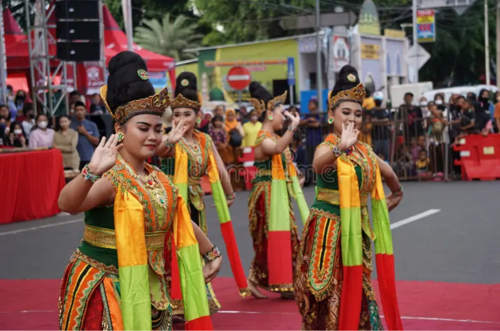
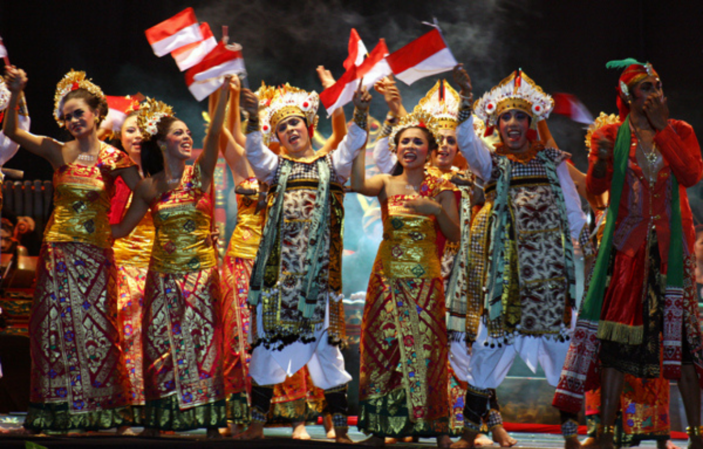
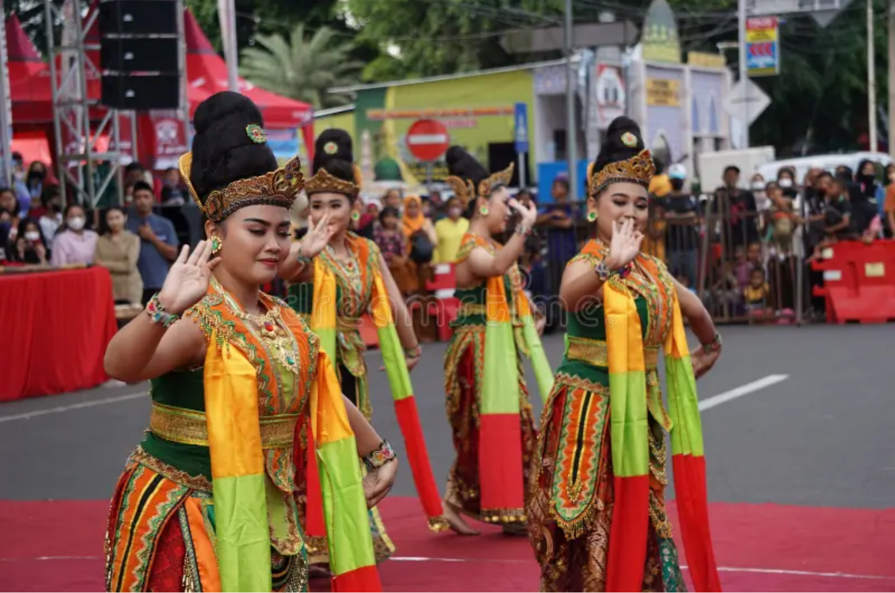
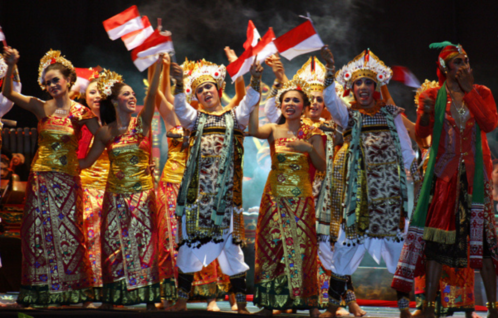

Sumber foto: https://tirto.id/biografi-dewi-soekarno-nama-asli-usia-agama-masih-hidup-keturunan-g7AT


Sumber foto: https://tirto.id/biografi-dewi-soekarno-nama-asli-usia-agama-masih-hidup-keturunan-g7AT
Ratna dewi soekarno
kepribadian yang dapat diteladani
nilai-nilainya di UUD
Ratna Sari Dewi Soekarno lahir di Tokyo, Jepang 6 Februari
1940. Istri ke-6 Presiden pertama RI, Soekarno itu memiliki
nama asli Naoko Nemoto, sebelum dipinang Sang
Proklamator.
Dewi Soekarno berasal dari keluarga sederhana.
Orangtuanya merupakan pekerja kontruksi migran di Tokyo.
Dewi adalah putri ke-3 dari orangtuanya itu. Kesederhanaan
keluarganya membuat Dewi harus bekerja sejak usia remaja.
Dewi menjadi pramuniaga di perusahaan asuransi jiwa di
Chiyoda, hingga lulus sekolah menengah tahun 1955.
Mat Enh dan Ghani (2012) menyebut Dewi juga kerap kali
muncul di pentas-pentas terkemuka yang berlangsung di
Tokyo. Hal itu tak lepas dari ketertarikan Dewi terhadap seni
dan sastra.
Kepribadian Ibu Ratna Dewi Soekarno yang patut diteladani adalah sikap terbukanya
terhadap budaya lain dan keberaniannya mencoba hal baru. Ia mampu beradaptasi di
berbagai negara, menghargai keberagaman tanpa meninggalkan jati diri sebagai orang
Indonesia. Dengan rasa ingin tahu dan pikiran terbuka, ia membangun hubungan lintas
budaya dan menjadi sosok yang kuat serta dihormati.
Dewi Ratna Soekarno dan warga NTT sama-sama menunjukkan nilai toleransi yang
tinggi dengan sikap positif dalam menghadapi perbedaan budaya, agama, dan adat istiadat.
Keduanya berperan penting dalam menjaga harmoni sosial dan kerukunan, serta
menjadi teladan dalam hidup berdampingan secara damai di tengah keberagaman
masyarakat. Sikap mereka yang menghargai perbedaan dan mendorong persatuan
mencerminkan semangat toleransi yang kuat dan berdampak positif bagi lingkungan
sekitar.
Ratna Sari Dewi Soekarno, yang lahir sebagai Naoko
Nemoto di Tokyo pada 6 Februari 1940, menjadi
Warga Negara Indonesia (WNI) setelah menikah
dengan Presiden Soekarno pada 3 Maret 1962.
Pernikahan ini menjadikannya istri keenam Presiden
Soekarno dan memberinya status kewarganegaraan
Indonesia melalui proses naturalisasi sesuai dengan
Undang-Undang Kewarganegaraan yang berlaku
saat itu .
Pada tahun 2025, Ratna Sari Dewi memutuskan untuk
melepaskan status WNI-nya demi mendirikan partai
politik di Jepang bernama 12 Heiwa To, yang berfokus
pada perlindungan hewan. Keputusan ini diambil
karena hukum Jepang tidak mengizinkan warga
negara asing untuk mendirikan partai politik atau
mencalonkan diri dalam pemilihan umum.Dengan
demikian, ia mengajukan permohonan untuk kembali
menjadi warga negara Jepang dan melepaskan
kewarganegaraan Indonesia yang telah dipegangnya
selama 63 tahun .
Perubahan status kewarganegaraan ini mencerminkan dinamika hukum kewarganegaraan di Indonesia. Awalnya diatur oleh Undang-Undang Nomor 62 Tahun 1958, yang kemudian dicabut dan digantikan oleh Undang-Undang Nomor 12 Tahun 2006 tentang Kewarganegaraan Republik Indonesia. Undang-undang baru ini menetapkan bahwa pemberian kewarganegaraan (naturalisasi) dilakukan melalui keputusan presiden dan mengatur lebih lanjut mengenai syarat-syarat serta prosedur untuk memperoleh, melepaskan, atau mendapatkan kembali kewarganegaraan Indonesia .